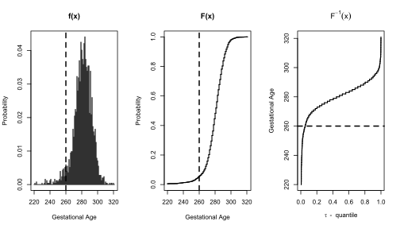
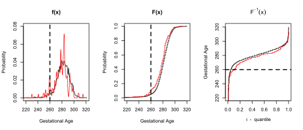
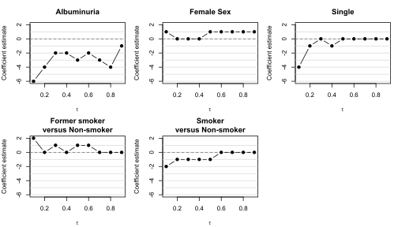
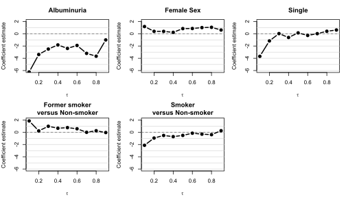

Quantile regression of gestational age and preterm birth for epidemiology research
Tutorial Essay and Methodological Note
Quantile regression is described for the epidemiology of gestational age and preterm birth. Unlike ordinary least squares regression, which models only the mean outcome, quantile regression models the entire gestational age distribution, including the lower tails associated with preterm birth. I illustrate the interpretation of quantile regression results and implementation in the R package quantreg. Using data from the 1958 UK Perinatal Mortality Survey, maternal albuminuria is shown to be associated with shorter gestational age, particularly among pregnancies in the lower quantiles of the gestational age distribution. Conventional quantile regression is also shown to produce implausible integer-valued coefficient estimates when gestational age is analyzed as a discrete outcome measured in days.
Quantile regression, gestational age, preterm birth, pregnancy outcomes, epidemiology, statistical modeling
Lawrence McCandless is Professor, Faculty of Health Sciences, Simon Fraser University, 8888 University Drive, Burnaby BC V5A 1S6, Canada.
E-mail: lmccandl@sfu.ca
R codes and a synthetic version of the PMS dataset used are available from the GitHub repository for this monograph:
https://github.com/Lawrence-McCandless/QuantitleRegressionEpi
Key words and phrases: Quantile regression, gestational age, preterm birth, pregnancy outcomes, epidemiology, statistical modeling.
1 Quantile Regression: The Basic Idea
Quantile regression is a data analysis technique where quantiles of the outcome are modelled in relation to predictor variables (Davino, Furno, and Vistocco 2014; Koenker 2005). It is an extension of least squares regression, which models averages. Quantile regression gives a richer description of the distribution of the outcome. It provides information about the entire distribution of the response, and this allows for a deeper understanding of how predictor variables influence different parts of the outcome distribution, not just the average.
This is useful in epidemiology research (Strickland et al. 2019). For example, in child health studies we can model IQ scores for neurodevelopment, or the forced expiratory volume to measure lung function. In these settings, we might prefer to not use linear regression models for location and scale because it assumes a normally distributed model for the outcome data distribution. Quantile regression is more robust to heteroscedasticity and outliers.
The basic idea of quantile regression is that the investigator chooses a particular quantile, which is indexed the Greek letter \(\tau\), which ranges from zero to one (from 0% to 100%). Informally, a quantile is simply the same thing as a “percentile”, except that a percentile is a percentage whereas a quantile is a number between zero and one. If \(\tau=0.5\) then the quantile is the median. If \(\tau=0.1\), then the quantile is the 10\(^{th}\) percentile, meaning the bottom 10% of the distribution.
Quantile regression involves modeling the quantile of a dependent variable \(Y\) in relation to a predictor variable \(X\). The model is written \[\begin{aligned} Q_{\tau} = \beta_{0 [\tau]} + \beta_{X [\tau]} X, \label{eq-fqr-qrmodel.univar.with.taus} \end{aligned}\] which has two unknown parameters that define the model: \(\beta_{0 [\tau]}\) and \(\beta_{X [\tau]}\). The quantity \(\beta_{X [\tau]}\) is the slope (regression coefficient) and \(\beta_{0 [\tau]}\) is the y-intercept. The subscript \(\tau\) is written to emphasize that the parameter depends on \(\tau\). For example, if \(\tau=0.1\), then slope \(\beta_{X [\tau=0.1]}\) describes the change in the 0.1 quantile (the 10\(^{th}\) percentile) for every one-unit increase in \(X\). The y-intercept parameter \(\beta_{0 [\tau]}\) is equal to the \(\tau^{th}\) quantile in the group with \(X=0\).
The true values of \(\beta_{0 [\tau]}\) and \(\beta_{X [\tau]}\) are unknown, and they must be estimated from the data \(Y_1, Y_2, \dots, Y_n\) and \(X_1, X_2, \dots, X_n\). The conventional approach described here is to minimize the sum of the weighted absolute value of the residuals. This is called minimizing the quantile loss, or equivalently, the pinball loss because the absolute value of the residuals looks like a pinball machine. To explain in more detail, quantile regression calculates the quantities \(\hat{\beta}_{0 [\tau]}\) and \(\hat{\beta}_{X [\tau]}\) which make the sum \[\begin{aligned} \sum_{i=1}^n \rho_\tau\Big( Y_i - (\hat{\beta}_{0 [\tau]} + \hat{\beta}_{X [\tau]} X_i) \Big) \end{aligned} \tag{1}\] as small as possible, where \(\rho_\tau(.)\) is the pinball loss function, and it is the absolute value of the residual \(Y_i - (\beta_{0 [\tau]} + \beta_{X [\tau]} X_i)\) multiplied by \(\tau\) or \(1-\tau\).
\[\rho_\tau(u) = \begin{cases} \tau |u|, & \text{if } u \geq 0, \\ (1-\tau)|u|, & \text{if } u < 0. \end{cases}\]
The minimization in equation Equation 1 is called the quantile regression loss function, and we choose the model that minimizes the loss. This results in estimating quantiles. To understand how the model fitting works, it is useful to compare quantile regression to ordinary least squares regression where we minimize the sum of the squares of the residuals, which is written \[\sum_{i=1}^n \Big( Y_i - (\hat{\beta}_{0 [\tau]} + \hat{\beta}_{X [\tau]} X_i) \Big)^2.\] We illustrate quantile regression using the R package quantreg.
2 Example: Gestational age and preterm birth in the 1958 Perinatal Mortality Survey (PMS)
Early gestational age is an important determinant of infant morbidity and mortality (Goldenberg et al. 2008). It is measured on a discrete scale where the unit of analysis is typically weeks or days. Gestational age is not symmetrically distributed, and it has a long left tail, which corresponds to infants born too soon. At the upper end of the distribution, the right tail ends abruptly due to the modern obstetric practice of induction of labour late in pregnancy. In perinatal epidemiology, we are interested in the entire shape of the distribution, not just the mean.
We illustrate these ideas using data from the 1958 UK Perinatal Mortality Study (PMS) from the UK Data Service (Centre for Longitudinal Studies 2024). This was a longitudinal cohort study following the lives of several thousand individuals born in a single week in England, Scotland and Wales. The data are contained in the file pms.csv, which is available from the GitHub repository of this article. The data include information from 2,540 mother and child pairs, and measurements of gestational age, measured in days, are contained in the gestage variable. For illustration of quantile regression, we focus on the influence of albuminuria on gestational age. Albuminuria (album variable coded as 1 or 0) is a symptom of pregnancy-induced high blood pressure (preeclampsia), which is a known risk factor for preterm birth and growth restriction. R codes and a synthetic version of the PMS dataset are available from the GitHub repository for this monograph at https://github.com/Lawrence-McCandless/QuantileRegressionEpidemiology.
We begin by calculating descriptive statistics for gestational age, stratified by albuminuria level of the mother during pregnancy. Using the quantile() command in R, we have
> quantile(pms$ga, probs=c(0.1, 0.25, 0.5, 0.75, 0.9), type=1)
10% 25% 50% 75% 90%
268 275 282 289 294and the results are summarized in Table ?@tbl-fqr-pmsalbumvsga, which also includes the frequency of preterm births, defined as births shorter than 259 days (37 weeks).
| Albuminuria | n | Mean | SD | 0.1 | 0.25 | 0.5 | 0.75 | 0.9 | count | % |
|---|---|---|---|---|---|---|---|---|---|---|
| Yes | 182 | 278.3 | 13.2 | 260 | 272 | 280 | 285 | 293 | 10 | 5.5% |
| No | 2358 | 281.0 | 12.7 | 268 | 275 | 282 | 289 | 295 | 96 | 4.1% |
| All | 2540 | 280.9 | 12.8 | 268 | 275 | 282 | 289 | 294 | 106 | 4.2% |
From the results it appears that albuminuria is associated with a shorter gestational age. Furthermore, the reduction is greatest at the lower end of the distribution of gestational age. For example, at the median, we see a 2-day reduction in gestational age (280 days versus 282 days), whereas at the \(\tau=0.1\) quantile (10\(^{th}\) percentile) we see an 8-day reduction (260 days versus 268 days). A \(>1\) week reduction in gestational age is clinically significant because the normal duration of pregnancy is 40 weeks, whereas an infant born at less than 37 weeks is classified as preterm. Moreover, the shift in the distribution of gestational age is not apparent based on a comparison of means. The mean is 278.3 days for mother with albuminuria versus 281.0 days in mothers without. In Table ?@tbl-fqr-pmsalbumvsga, we see that there are a total of 106 preterm births, and that albuminuria is associated with a 31% increase in the frequency of preterm birth (5.5% versus 4.2%).
3 Quantile regression with a single predictor variable
To motivate quantile regression, Figure 1 shows the gestational age distribution, including the quantile function. As expected the distribution of gestational age has a long left tail.

To examine the influence of albuminuria on gestational age, Figure 2 shows the distribution of gestational age stratified by albuminuria level. The red curve is shifted to the left, which illustrates that infants of mothers with albuminuria have shorter gestational age.

Accordingly, we applied quantile regression to the data with ga as the dependent variable and album as the predictor variable. Subsequently, we considered adjustment for additional risk factors for preterm birth. We use the R function rq() in the quantreg package to fit quantile regression models.
> summary(rq(ga ~ album, tau=0.1, data=pms))
Call: rq(formula = ga ~ album, tau = 0.1, data = pms)
tau: [1] 0.1
Coefficients:
Value Std. Error t value Pr(>|t|)
(Intercept) 268.00000 0.48725 550.02221 0.00000
album -8.00000 2.24580 -3.56221 0.00037From the R output, we have the point estimates \(\hat{\beta}_{X [\tau]}=-8.0\) and \(\hat{\beta}_{0 [\tau]}=268\), and the equation for the \(\tau=0.1\) quantile is given by \(Q_{\tau}(Y) = 268.0 - 8.0 X\). By default, the rq(.) command uses the "nid" option (Davino, Furno, and Vistocco 2014; Koenker 2005).
The quantile regression results are illustrated in further detail in Table ?@tbl-fqr-pmsbetasqr. For comparison, two other analyses are also included: 1) ordinary least squares (OLS) regression of ga on album, which models the mean of gestational age, and 2) logistic regression analysis of preterm on album, where preterm birth is defined as gestational age less than 259 days (preterm = ga < 259).
| Method | \(\tau\) | \(\hat{\beta}_{X[\tau]}\) | SE | 95% CI | \(\hat{\beta}_{0[\tau]}\) | SE | 95% CI |
|---|---|---|---|---|---|---|---|
| Quantile regression | 0.9 | -2.00 | 0.95 | (-3.86, -0.14) | 295.00 | 0.37 | (294.28, 295.72) |
| 0.75 | -4.00 | 1.04 | (-6.04, -1.96) | 289.00 | 0.36 | (288.29, 289.71) | |
| 0.5 | -2.00 | 1.08 | (-4.12, 0.12) | 282.00 | 0.29 | (281.43, 282.57) | |
| 0.25 | -3.00 | 1.33 | (-5.61, -0.39) | 275.00 | 0.27 | (274.47, 275.53) | |
| 0.1 | -8.00 | 2.25 | (-12.40, -3.60) | 268.00 | 0.49 | (267.04, 268.96) | |
| OLS regression | - | -2.76 | 0.98 | (-4.69, -0.84) | 281.05 | 0.26 | (280.53, 281.56) |
| Logistic regression | - | 0.58 | 0.30 | (0.00, 1.16) | -3.07 | 0.10 | (-3.26, -2.87) |
The results show an overall pattern where albuminuria is associated with shorter gestational age, particularly among pregnancies in the lower quantiles of the gestational age distribution. In Table ?@tbl-fqr-pmsbetasqr, the regression coefficients \(\hat{\beta}_{X [\tau]}\), for various \(\tau\), are both negative and precise. Moreover, we see the advantages of quantile regression compared to OLS regression and logistic regression. OLS identifies a statistically significant inverse association between albuminuria and gestational age. But the regression coefficient for the difference in the means (\(\hat{\beta}_X=-2.76\) days) gives a poor description of the overall relationship in the data. On the other hand, logistic regression dichotomizes the gestational age variable. This has the advantage of giving results that are easier to interpret at the expense of discarding information about the rest of the distribution. The logistic regression coefficient is 0.58, which corresponds to an odds ratio of 1.79 for the association between albuminuria and higher odds of preterm birth. However, the estimate is relatively imprecise with a wide 95% confidence interval 1.0 to 3.19.
4 Implausible results: Illustrating the influence of discrete outcomes
A curious feature of Table ?@tbl-fqr-pmsbetasqr is that quantile regression coefficients are always integers (i.e. numbers like \(-2,-1, 0, 1, 2, \dots\) etc). This makes the results look implausible (Alampi, Lanphear, and McCandless 2025). For example, when \(\tau=0.1\) then \(\hat{\beta}_{X [\tau]} = -8.00\). These integer-valued coefficient estimates from quantile regress are not an accident. They occurs because the quantreg software uses the simplex algorithm (Koenker 2005). When \(Y\) and \(X\) are discrete, then the software will only produce integer valued parameters. The software that minimizes the pinball loss in equation Equation 1 cannot explore a continuous range of possible values for the unknown parameters \(\beta_{X [\tau]}\) and \(\beta_{0 [\tau]}\). Instead it considers a restricted collection of fitted models called basic solutions, which are the linear models that directly through pairs of data points. The simplex algorithm works well for quantile regression with continuous outcomes because the gaps (spacings) between neighboring data points shrink to zero in large datasets. But it can generate implausible results for discrete outcomes because the basic solutions are heavily influenced by discretization arising from rounding of the data. If the data are discrete then the output of quantile regression software is also discrete. See Koenker (Koenker 2005), Section 2.2.1 for discussion.
To show why the results are implausible, it is helpful to consider multivariable quantile regression analysis with several predictor variables. We include three additional predictors of gestational age: Child sex, marital status, and smoking status. These are encoded in the zero-one variables female, single, and zero-one indicator variables for smoking (smoke1 for former smoker versus non-smoker, and smoke2 for smoker versus non-smoker). We fit the quantile regression model \[\begin{aligned}
Q_{\tau} = \beta_{0 [\tau]} + \beta_{1 [\tau]} album + \beta_{2 [\tau]} female + \beta_{3 [\tau]} single +\beta_{4 [\tau]} smoke1 + \beta_{5 [\tau]} smoke2\label{eq-fqr-qrmodel.mlr}
\end{aligned}\] using the R code:
> summary(rq(ga ~ album + female + single + as.factor(smk), tau=0.1, data=pms))
Call: rq(formula = ga ~ album + female + single + as.factor(smk), tau = 0.1,
data = pms)
tau: [1] 0.1
Coefficients:
Value Std. Error t value Pr(>|t|)
(Intercept) 268.00000 0.77273 346.82260 0.00000
album -6.00000 1.88352 -3.18553 0.00146
female 1.00000 0.94601 1.05707 0.29058
single -4.00000 4.98359 -0.80263 0.42226
as.factor(smk)1 2.00000 1.07956 1.85261 0.06406
as.factor(smk)2 -2.00000 1.20993 -1.65298 0.09846Again the regression coefficients are integers. To show this behavior more clearly, Figure Figure 3 plots the estimated quantile regression coefficients for the different variables when \(\tau\) ranges from zero to one. Random sampling errors are ignored (e.g. 95% confidence intervals). We see that the curves bounce around half-haphazardly because they are stuck on integer values. Because \(Y\) and \(X\) are discrete, the quantreg package will only produce integer valued estimates of the model parameters.

Consider the gestational age of female infants. It is already known that females have slightly shorter average duration of pregnancy than males among full-term births in many human populations (Divon et al. 2002). But the difference between males and females is small (e.g. 280.6 days for males versus 279.8 days for females by one estimate (Divon et al. 2002)). Thus we already know that the effect of sex on gestational age is non-zero. But it is also unlikely to be exactly equal to 1.0 days because a single day is an arbitrary unit of measurement. In this example, the size of the target parameters is roughly the same as the size of the rounding error in the gestational age scale. The simplex algorithm for fitting quantile regression gives results where the accuracy of estimates is influenced discreteness of the outcome in way that is seems unreasonable.
A further consequence of the implausible point estimates is that it propagates into the calculation of confidence intervals and p-values for uncertainty assessment. The standard errors by default are produced using the option se="nid" computed under the assumption that gestational age is continuous and that the errors are not necessarily independent and identically distributed. A discussion of statistical inference in quantile regression is beyond the scope of this monograph, but the point is the default t-values and p-values from the quantreg package depend on the implausible point estimates.
5 Dither: A remedy for implausible results in quantile regression with discrete outcomes
There are different strategies to fix the implausible results from quantile regression with discrete outcomes (Alampi, Lanphear, and McCandless 2025). One option is to use dithering (Machado and Silva 2005). Dithering is a procedure that adds uniform noise to the outcome variable \(Y\) to account for the discreteness. For example, if the duration of gestation is ga=280 days, then we randomly add a number ranging from -0.5 to 0.5 days to 280. The resulting dithered outcome variable is fed into quantile regression.
To dither the gestational age variable, we use the dither() command in the quantreg package to create a new variable ga_d.
> pms$ga_d <- dither(pms$ga)
> head(pms$ga)
[1] 303 261 285 298 277 303
> head(pms$ga_d)
[1] 303.2863 260.9340 284.9133 298.4330 277.4567 303.3706We then feed the dithered outcome ga_d into quantile regression in place of the original variable ga. The results are given as
> summary(rq(ga_d ~ album + female + single + as.factor(smk), tau=0.1, data=pms))
Call: rq(formula = ga_d ~ album + female + single + as.factor(smk),
tau = 0.1, data = pms)
tau: [1] 0.1
Coefficients:
Value Std. Error t value Pr(>|t|)
(Intercept) 267.96566 0.79485 337.12761 0.00000
album -6.51431 1.69716 -3.83835 0.00013
female 1.33697 1.00523 1.33001 0.18364
single -3.20120 4.76561 -0.67173 0.50182
as.factor(smk)1 1.77985 1.14689 1.55189 0.12081
as.factor(smk)2 -1.87375 1.28035 -1.46347 0.14346Based on this R output, we can see that the quantile regression results are more reasonable because the point estimates \(\hat{\beta}_{1 [\tau]}, \hat{\beta}_{2 [\tau]} \dots , \hat{\beta}_{5 [\tau]}\) are no longer constrained to lie on the set of integers. Because the results depend on the specific dithered values of gestational age, it is recommended to average over the dithered samples (Machado and Silva 2005). This is achieved by using Monte Carlo simulation to replace the single dithered values with several possible values, and then repeat the analysis each time to average over uncertainty. The R codes for dithering are given in the supplementary GitHub repository for this monograph.
Figure Figure 4 shows the results of multivariable quantile regression after averaging over the dithered values of gestational age. Thus Figure Figure 4 is identical to Figure Figure 3, except that the results account for discreteness of gestational age due to rounding. The quantile coefficient curves are much smoother. Thus the results are more plausible because the estimated values of \(\hat{\beta}_{1 [\tau]}, \hat{\beta}_{2 [\tau]} \dots , \hat{\beta}_{5 [\tau]}\) are not stuck on the set of integers (i.e. numbers like \(-2,-1, 0, 1, 2, \dots\)).

Returning to the example of the influence of female sex on gestational age, we see in Figure Figure 4 that the quantile coefficients curve is greater than zero. In contrast, conventional quantile regression gives only estimates that are 0.00 or +1.00 which are artifacts of the rounding error of gestational age. Certainly some caution in interpretation is warranted regarding the role of random sampling error in the estimates. If we assume that the median duration of gestation is 40 weeks (280 days), then the standard error comparing equal-sized groups of females versus males \(n_0=n_1=1250\) at the median is roughly equal to \(\sqrt{\xi ^2(1/n_1 + 1/n_2)}\), where \(\xi^2 = \tau(1-\tau)/f(280 \textrm{ days})^2\). If the density at 280 days is 2%, then the standard error is approximately equal to 1. Thus the results for female gender are imprecise. However, imprecise results from random sampling error does not justify poor accuracy of point estimation.
6 Concluding Remarks
A critique of the preceding analysis is that quantile regression can only be used to analyze continuous outcomes, and it should not be applied to discrete outcomes. This is described, for example, in Koenker (Koenker 2005), Section 3.2, and Davino, Furno and Vistocc (Davino, Furno, and Vistocco 2014), Section 1.1.1, which stipulate that the distribution of the outcome \(Y\) should have a continuous probability density. This requirement justifies the large-sample confidence intervals and p-values for quantile regression. Furthermore, when quantile regression is applied to large datasets with continuous outcomes, then implausible results that we saw in Section 4 are unusual because the gaps (spacings) between neighboring data points shrink to zero. But on the other hand, the process of fitting a quantile regression model by minimizing the pinball loss in equation Equation 1 does not actually require that the outcome \(Y\) is continuous. To put it bluntly: Equation Equation 1 doesn’t care if \(Y\) is continuous or not.
Moreover, the requirement of a continuous outcome in quantile regression is limiting in practice. In many applications the outcome variable is not truly continuous. In statistics, the word “continuous” is used in a narrow mathematical sense for a scale in which any real number in its range is a possible value. However, the word “continuous” in a practical sense means a scale that is very fine for the application at hand. In the PMS data example, the true gestational age of an infant is a continuous quantity: It is the duration of human pregnancy from conception until birth of the infant. But in practice, gestational age is rarely measured with precision exceeding \(\pm 1\) day because the exact timing of the start of conception is difficult to measure precisely.
And yet, despite the discreteness of \(Y\) that arises from rounding errors in the data, epidemiologists still wish to use quantile regression for outcomes like gestational age. The method provides information about the entire distribution of the response, and this allows for a deeper understanding of how predictor variables influence different parts of the outcome distribution, not just the average. The benefits of quantile regression are clearly displayed in Table ?@tbl-fqr-pmsbetasqr: We see that albuminuria has the largest impact at the lower end of the gestational age distribution. This finding invites inquiry into understanding the reasons for this large effect. For example, some infants in the PMS study may be uniquely susceptible to maternal illness during pregnancy.
There are different strategies to fix the implausible results in quantile regression that result from rounding, and this is an ongoing area of research (e.g. see (Alampi, Lanphear, and McCandless 2025)). Section 5 uses dithering (Machado and Silva 2005), which adds uniform noise to the outcome variable \(Y\) to account for the discreteness. In fact, dithering can be viewed as an example of multiple imputation for missing data. In multiple imputation, we replace a single missing data point with one of several plausible, simulated values based on observed data using Monte Carlo simulation. The process can be repeated several times to average over the imputation uncertainty. Dithering can also be interpreted as an example of ordered categorical regression with a latent variable and cutpoints. Under this interpretation, the observed discrete outcome is viewed as a rounded or categorized version of an underlying continuous latent variable, and the added uniform noise approximates the uncertainty regarding the true value within each interval defined by the cutpoints. A different strategy to account for implausible results is to use Bayesian quantile regression (Yang, Wang, and He 2016). This approach uses an asymmetric Laplace likelihood, and model fitting proceeds using Markov chain Monte Carlo instead of the usual pinball loss minimization. The advantage of Bayesian quantile regression is that it explores the entire parameter space instead of being restricted to integer-valued coefficients, and the result is the full posterior distribution for unknown parameters.